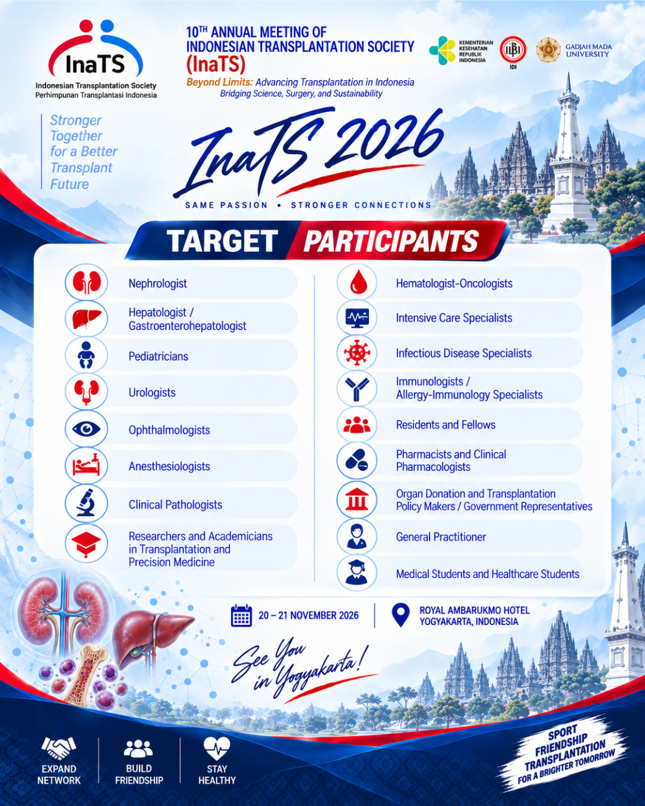
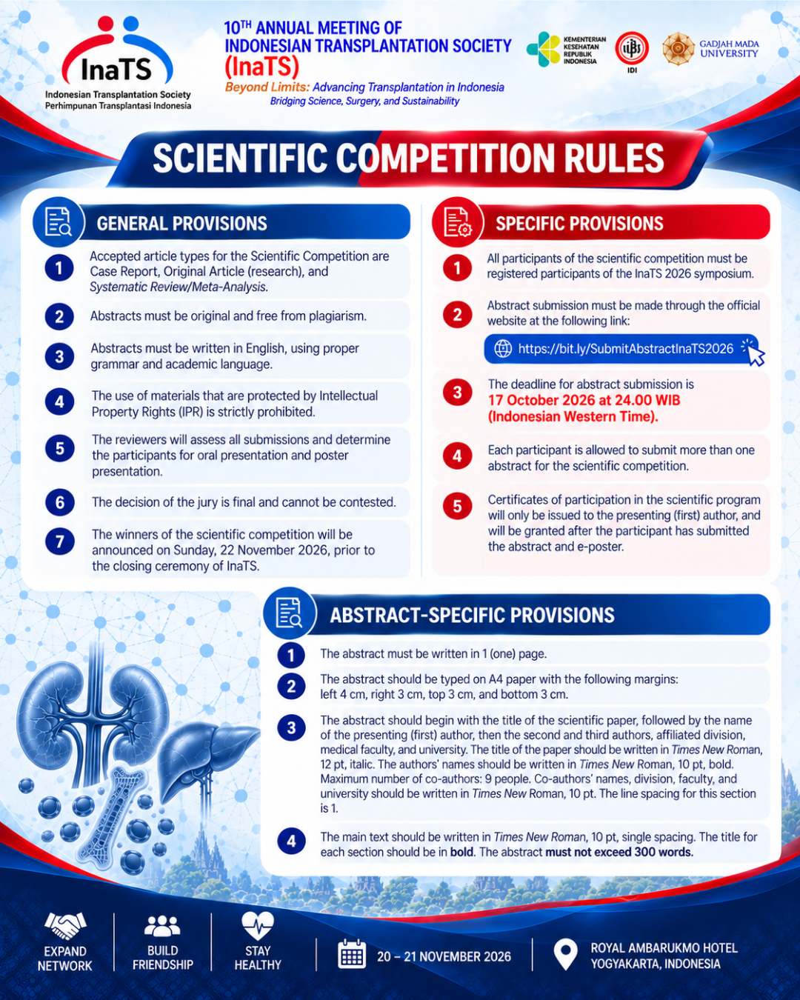
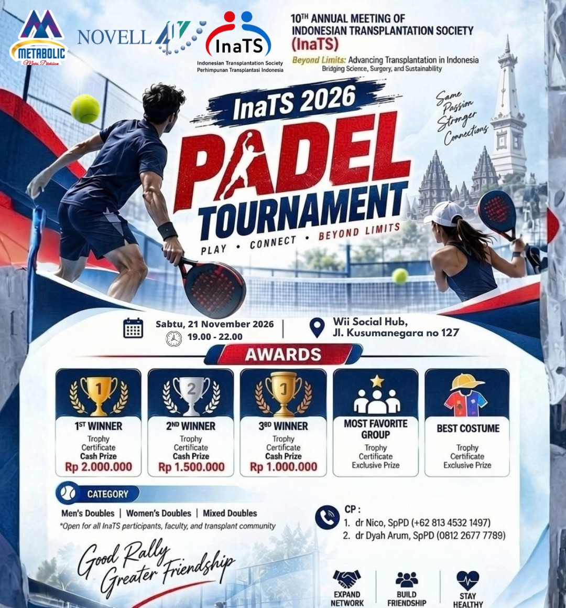
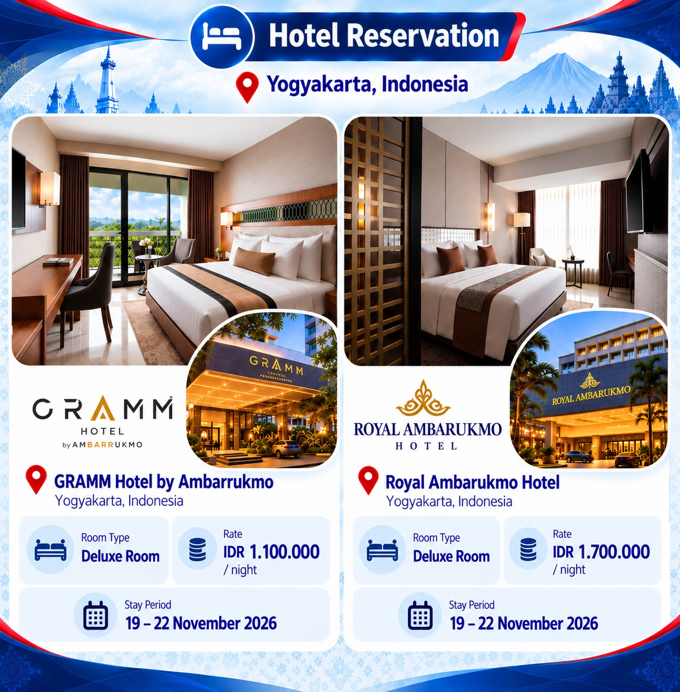

Why Attend InaTS 2026?
Comprehensive discussions on kidney, liver, cornea, and bone marrow transplantation with national & international experts.
World-Class Program
Top Experts
Networking
Scientific Awards
Target Participants
InaTS 2026 welcomes professionals, trainees, researchers, policy makers, and students across the transplantation community.

Clinical Specialists
- Nephrologists
- Hepatologists / Gastroenterohepatologists
- Pediatricians
- Urologists
- Ophthalmologists
- Anesthesiologists
- Clinical Pathologists
- Hematologist-Oncologists
- Intensive Care Specialists
- Infectious Disease Specialists
- Immunologists / Allergy-Immunology Specialists
Other Professionals & Future Leaders
- Residents and Fellows
- Pharmacists and Clinical Pharmacologists
- Organ Donation and Transplantation Policy Makers / Government Representatives
- General Practitioners
- Researchers and Academicians in Transplantation and Precision Medicine
- Medical Students and Healthcare Students
Final Scientific Rundown
Royal Ambarrukmo Hotel, Yogyakarta | 20–21 November 2026
Friday, 20 November 2026
Opening Remarks by the InaTS Chair and the Organizing Committee Chair
- Organizing Committee Chair's Report: Dr. dr. Metalia Puspitasari, M.Sc., Sp.PD, Subsp. G.H. (K), FINASIM
- Welcome Address & Official Opening: Dr. dr. Maruhum Bonar H. Marbun, Sp.PD-KGH, FINASIM (InaTS Chair)
"From Policy to Practice: Assessing Government Readiness for Deceased Donor Programs and the National Transplant Registry in Indonesia"
Moderator: dr. Heru Prasanto, Sp.PD-KGH
Speaker: dr. Azhar Jaya, S.H., SKM., MARS (Director General, Ministry of Health of the Republic of Indonesia)
"Dead Donor Protocol in Practice: Bridging Critical Care and Transplantation in Indonesia"
Moderator: dr. Calcarina Fitriani Retno Wisudarti, Sp.An-KIC
"Brain Death Declaration and Donor Optimization: What Every Intensivist Must Know Before the Transplant Team Arrives"
"Keeping the Organs Alive: Anesthetic and Hemodynamic Management of the Brain-Dead Donor for Optimal Organ Procurement"
09:40 - 09:50 | Discussion & Q&A
"The Perfect Partnership: Optimizing Tacrolimus and Mycophenolate as the Cornerstone of Kidney Transplant Immunosuppression"
Moderator: dr. Retno Palupi, B.Med.Sc, M.Epid, M.Sc, Sp.A(K), Subsp.Nefro
"Getting Tacrolimus Right from Day One: Initiation, Target Trough, and Early Post-Transplant Pitfalls"
"Making the Partnership Work: Practical Mycophenolate Dosing, Drug Interactions, and Monitoring in Tacrolimus-Based Regimens"
10:30 - 10:40 | Discussion & Q&A
"Guarding the Graft from Within: Tackling the Most Common Viral and Bacterial Infections After Kidney Transplantation"
Moderator: dr. Afif Rahman, Sp.Rad, Subsp.RI(K)
"The CMV Dilemma in Kidney Transplant Recipients: When to Prevent, When to Treat, and How Long to Use Valganciclovir"
"Common Yet Underestimated: Urinary Tract Infection and Graft Pyelonephritis in Kidney Transplant Recipients"
11:20 - 11:30 | Discussion & Q&A
"The Art of Modern Kidney Transplant Surgery: From Scarless Donor Nephrectomy to Optimal Recipient Implantation"
Moderator: dr. Tanaya Ghinorawa, Sp.U(K)
"No Scar, No Compromise: Transvaginal Natural Orifice Specimen Extraction (NOSE) and Laparoscopic Donor Nephrectomy — Technique, Safety, and Donor Experience"
"The Recipient Side of Success: Surgical Technique, Anatomical Considerations, and Technical Pitfalls in Kidney Transplant Implantation"
13:40 - 13:50 | Discussion & Q&A
15 Presenters (10 minutes per presenter)
Judges: FIIR Team
Poster Exhibition Hall (14:00 - Finish)
Saturday, 21 November 2026
"Clearing the Path Beyond Immunological Barriers: The Expanding Role of Therapeutic Plasma Exchange in Kidney Transplantation"
Moderator: dr. Trisula Utomo, Sp.U(K)
Speaker: Dr. dr. Pringgodigdo Nugroho, Sp.PD-KGH
"Advancing Transplantation in the Era of Precision Medicine: Optimizing Long-Term Outcomes Through Innovation, Collaboration, and Personalized Immunosuppression"
Moderator: Prof. Dr. dr. Endang Susalit, Sp.PD-KGH, FINASIM
"The Future of Immunosuppression in Kidney Transplantation: Balancing Rejection Prevention, Infection Risk, and Graft Longevity"
"The Role of Tacrolimus Once Daily Versus Tacrolimus Twice Daily in De Novo Kidney Transplant Patients: From Evidence-Based to Clinical Practice"
09:40 - 09:50 | Discussion & Q&A
"Protecting the Graft at Every Stage: Tailored Induction and Sustained Antiproliferative Therapy in Kidney Transplantation"
Moderator: dr. Yulia Wardhani, Sp.PD-KGH
"Start Strong, Stay Safe: The Role of Basiliximab Induction in Low-to-Moderate Immunological Risk Kidney Recipient"
"Don't Break the Backbone: Mycophenolate Exposure, Dose Reduction, and Their Impact on Rejection and Long-Term Graft Outcomes"
10:30 - 10:40 | Discussion & Q&A
"Advancing Hematopoietic Stem Cell Transplantation in Indonesia: From Real-World Needs to Center Readiness and Program Implementation"
Moderator: dr. Yasjudan Rastrama Putra, Sp.PD, Subsp.H.Onk.M(K)
"Real-World Challenges in Developing Autologous Stem Cell Transplantation at Dr. Sardjito General Hospital"
"Kariadi Hospital's Experience in Developing a Hematopoietic Stem Cell Transplant Program"
11:20 - 11:30 | Discussion & Q&A
"Beyond the Crossmatch: Precision Histocompatibility for Safer Kidney Transplantation in Indonesia"
Moderator: Dr. dr. Teguh Triyono, M.Kes, Sp.PK, Subsp.KV(K), Subsp.BDKT(K)
"Reading the Immunological Risk: How HLA Typing, DSA, and Crossmatch Results Guide Clinical Decisions from Donor Selection to Follow-Up"
"HLA-Guided Immunosuppression: From Immunological Risk to Personalized Kidney Transplant Care"
13:10 - 13:20 | Discussion & Q&A
"Elevating Care, Overcoming Limits: The Future of Pediatric Living Donor Liver Transplantation"
Moderator: Prof. dr. Gunadi, Ph.D, Sp.BA, Subsp.D.A(K)
"Beyond Size, Beyond Limits: Advancing Pediatric Liver Transplantation Through Surgical and Hepatological Excellence"
"Small Vessels, High Stakes: Surgical Techniques and Complication Management in Pediatric Living Donor Liver Transplantation"
14:00 - 14:15 | Discussion & Q&A
- Launch of the Organ Transplantation and Cadaveric Donor Consensus
- Announcement of Scientific Competition Winners
- Door Prize
- Closing Remarks & Event Report by the Organizing Committee Chair
Scientific FIIR Awards 2026
Proudly supporting excellence in research, innovation, and scientific paper presentation!
Grand Winner
IDR 12,000,000
+ Q1 Journal Voucher (USD 2,000)
First Runner-Up
IDR 9,000,000
+ Q1 Journal Voucher (USD 2,000)
Second Runner-Up
IDR 7,000,000
+ Q1 Journal Voucher (USD 2,000)
Abstract Submission Status
Abstract Submission is Closed
The deadline for abstract submission was 17 October 2026 at 23:59 WIB. We are no longer accepting new submissions.
Thank you to all authors who submitted their scientific work!

General Provisions
- Accepted article types: Case Report, Original Article (research), and Systematic Review/Meta-Analysis.
- Abstracts must be original and free from plagiarism.
- Abstracts must be written in English, using proper grammar and academic language.
- The use of materials protected by Intellectual Property Rights (IPR) is strictly prohibited.
- Reviewers will assess submissions and select participants for oral or poster presentation.
- The jury's decision is final and cannot be contested.
- Winners will be announced on Saturday, 21 November 2026, before the InaTS closing ceremony.
Specific Provisions
- Participants must be registered for the InaTS 2026 symposium.
- Deadline: 17 October 2026 at 23:59 WIB (Closed).
- Certificates are issued only to the presenting (first) author.
InaTS 2026 Padel Tournament
Good Rally, Greater Friendship — Same Passion, Stronger Connections

Date & Time
Saturday, 21 November 2026
19.00–22.00 WIB
Venue
Wii Social Hub
Jl. Kusumanegara No. 127, Muja Muju, Umbulharjo, Yogyakarta
Tournament Categories
Awards & Prizes
1st Winner
Rp 2.000.000
2nd Winner
Rp 1.500.000
3rd Winner
Rp 1.000.000
Padel Contact Persons
Symposium Registration Fee
2 Days Full Access Symposium (20–21 November 2026)
🏦 Bank Transfer Information:
Bank Mandiri — 137-00-1429409-0 (a/n KORWIL PERNEFRI YOGYAKARTA)
Hotel Reservation Yogyakarta
Special rates for InaTS 2026 participants & attendees

For Reservation & Information:
Hotel Reservation CP
Ratna: 0812-2720-6602
Official Secretariat Email
inats2026@gmail.com
Symposium Registration CP
dr. Anita, SpPD: 0853-2046-6624
Atri Wijiasih: 0821-3353-5302